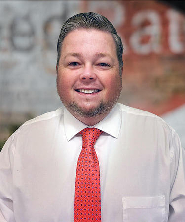

Target Audience
The site is targeted towards Helping the community and the business investment return in a positive way for our partners by creating and retaining jobs and by being the one-stop shop and voice of the business community. So, from any business from farm to big companies, we cover all in the community. Any business owner or buyer or looking to start a business can access this site as well all consumers in the community and even up to the state anyone can access and contribute to the site and community for business information.
Persona 1: Abbey
Abbey is a small dental office in downtown Ocala. She works with a lot of people in the community and lots of business in the medial and health field in the Ocala area. While practicing in a large city does have benefits, there are drawbacks. There is more competition, much more. New dentists in Urban areas often offer extended hours including Saturdays just to be competitive. The cost of living is expensive, as is practice overhead. As a young dentist Abbey doesn't feel pressure to participate in plans as long as they know their competition participates. With our group she can help her small dental business stay strong and help her to grow and give back.
Persona 2: John
John is quite know in the community for helping with finances and being a numbers guru in the local area. But when it comes to knowing most of your neighbours, and running into them frequently, can create special opportunities for advisors who live and work in small communities. We help people like john find out about the special ways he can connect with his neighbourhood clients. He can find the people he can help and grow his business to help more of the community.
Scenario 1
Abbey needs to see if her dental office will be able ot open a new office in the area and if she is able to have students as well with this new building in the community.
Scenario 2
John and his team need to see if they can have clients from out of state to come and open a firm in the local area to help their business and the businesses in the surrounding area.
Scenario 3
Abbey wants to travel to train in other states and allow those in the community to help send dentists to train abroad to help the community get the best service available.
Scenario 4
John wants to know if his firm can allow business not just for small but big and bigger companies can come into the local community to allow growth and oppurtunities.
Scenario 5
Abbey wants to know if the new building will help the community or make things worse for the people, as in they want something else or a dental office closer them in the local area.